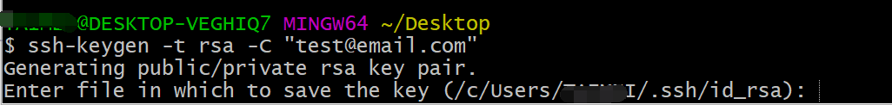
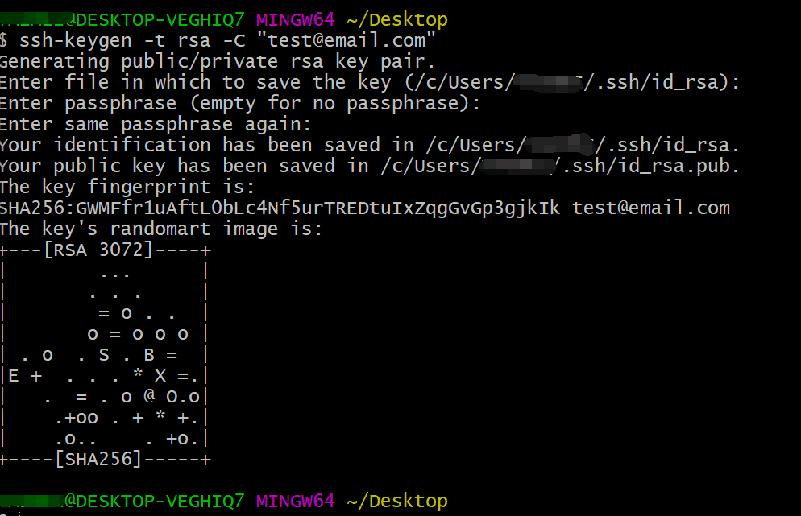
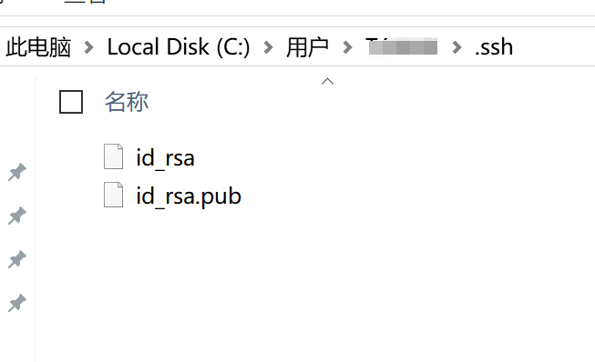
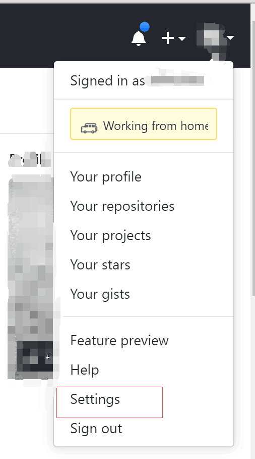
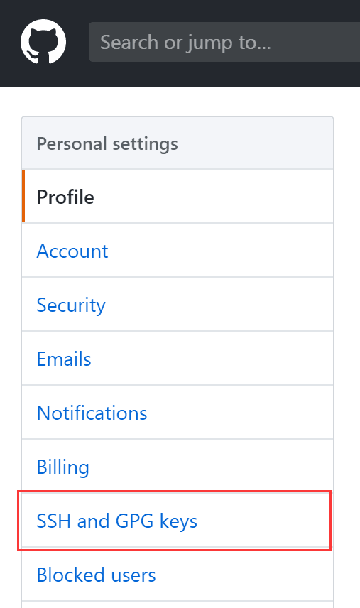
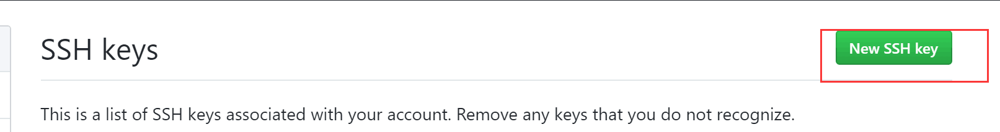
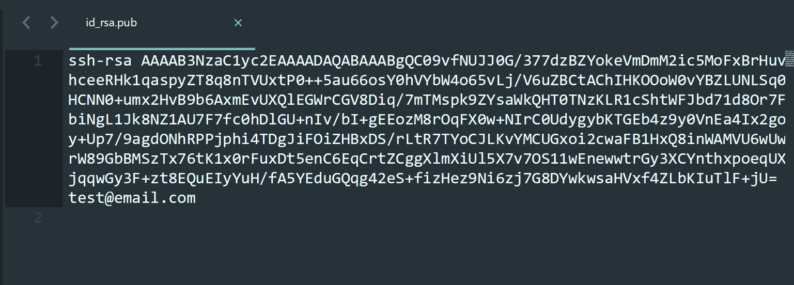
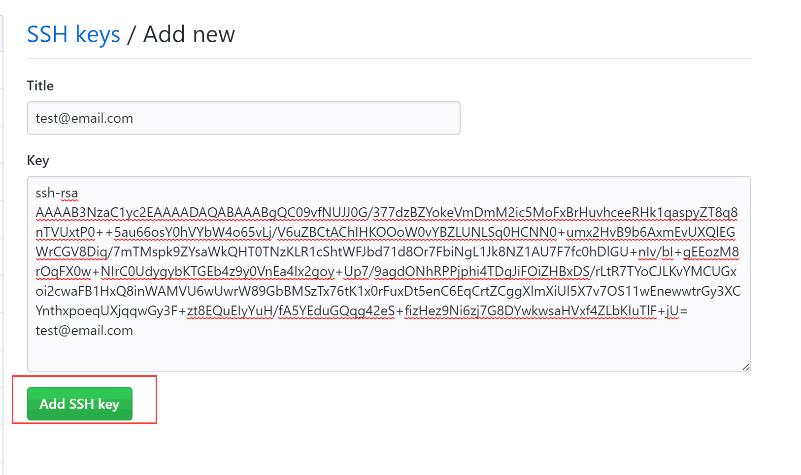
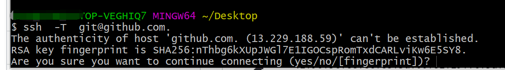
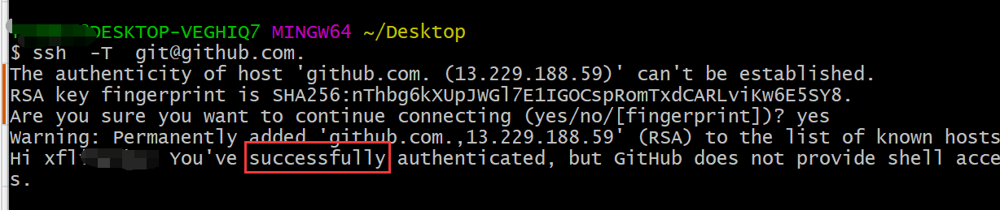

ssh 免密登录
生成密钥对
- 语法： ssh-keygen –t rsa –C ‘name’ -f 'xx_key’
- 参数：
- -t 选择加密算法 rsa
- -C 名字
- -f 生成密钥名字
ssh-keygen -t rsa -C "test@email.com" -f 'test_key’
ssh-keygen -t rsa -C "test@email.com"
- 第一步生成密钥对 'ssh-keygen -t rsa -C "test@email.com"'

- 回车！回车！！回车！！！

- 在用户下有一个 .ssh 的隐藏文件夹会出现 id_rsa ,id_rsa.pub 两个文件

github 配置
- 登录 github 打开个人中心 点击 "Settings"

2.左侧有一个 "SSH and GPG Keys" 选项 “点击进入“

- 点击右上角 "New SSH key"

- 打开本地生成的 ”id_rsa.pub“文件 复制

- 把 ”id_rsa.pub“ 文件的代码拷贝到 Key 中 然后添加一个标题“Title” ，点击 “Add SSH key”

测试密钥
ssh -T git@github.com.
ssh -T git@github.com. debue
- 输入 ‘ssh -T git@github.com. ’ 测试 ssh 是否生效，第一次 ssh 会有提示 输入 ‘yes’就可以了

- 看到 提示 “Hi XXXX ...” 说明配置成功！
